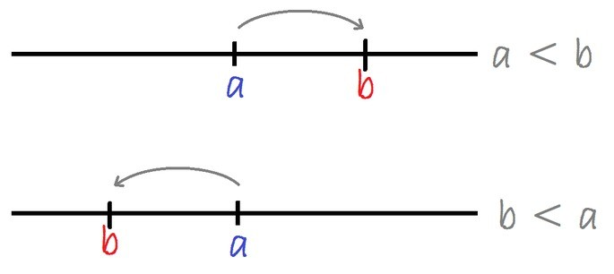

Los números reales son todos números que están representados como puntos en la recta real.
Este conjunto está formado por la unión de los conjuntos de números racionales e irracionales. Se representa con la letra ℜ.
El conjunto de los números reales tiene una cantidad infinita de elementos, es decir, no tienen final, ya sea del lado positivo como del negativo.
En la recta real el orden de los números se conoce por su posición en la recta, mientras más a la derecha está un número, es más grande, en contraste, mientras más la izquierda es menor. Si tomamos dos números reales distintos cualesquiera que llamamos a y b, entonces sucede una de dos posibilidades: a < b, en otras palabras, b esta a la derecha de a y por lo tanto es mayor, o b está a la izquierda de a, de forma que es menor, o sea b En consecuencia, podemos ordenar a los números reales.
La característica de integridad de los números reales quiere decir que no hay espacios vacíos en este conjunto de números.
Matemáticamente, esto se formula como que cada conjunto tiene un límite superior, y tiene un límite más pequeño.
Cada número real se puede ser expresado como un decimal cuya expansión decimal puede ser finita o infinita. Los números irracionales tienen cifras decimales interminables e irrepetibles, por el ejemplo, el número pi π es aproximadamente 3,14159265358979..., mientras que los racionales tienen expansiones finitas (osea que se terminan) como por ejemplo 0,25 o bien, infinitas pero periódicas (es decir que se repiten) como 3,333...
Se usan en mediciones de cantidades continuas, como la longitud y el tiempo.
Los números reales están conformados por otros conjuntos de números que se describen a continuación.
De la necesidad de contar objetos surgieron los números naturales. Estos son los números son: 1, 2, 3, 4, 5, 6, ...hasta el infinito. El conjunto de los números naturales se designa con la letra mayúscula N.
Todos los números están representados por diferentes combinaciones de los diez símbolos : 0, 1, 2, 3, 4, 5, 6. 7, 8, y 9, que reciben el nombre de dígitos.
Los números naturales nos sirven para decir cuántos compañeros tenemos en clases, la cantidad de flores que hay en un ramo y el número de libros que hay en una biblioteca.
El conjunto de los números enteros comprende los números naturales y sus números simétricos, o sea, los quedan del otro lado de la recta. Esto incluye los enteros positivos, el cero y los enteros negativos. Los números negativos se denotan con un signo "menos" (-). Se designa por la letra mayúscula Z y se representa como:
Un número simétrico es aquel que sumado con su correspondiente número natural da cero. Es decir, el simétrico de n es -n, ya que:
.png)
Y los simetricos de y y 27 son, respectivamente:
.png)
Los enteros positivos son números mayores que cero, mientras que los números menores que cero son los enteros negativos.
Los números enteros nos sirven para:
*representar números positivos: ganancias, grados sobre cero, distancias a la derecha.
*representar números negativos: deudas, pérdidas, grados bajo cero y distancias a la izquierda.
En el polo Norte la temperatura está por debajo de 0ºC durante casi todo el año, entre -43 ºC y -15ºC en invierno.
Una persona compra un vehículo por 10.000 pesos pero solo tiene 3.000 pesos.
.png)
Esto significa que queda debiendo 7.000 pesos.
Los números racionales, que también se conocen como fraccionarios, surgen por la necesidad de medir cantidades que no necesariamente son enteras. Medir magnitudes continuas tales como la longitud, el volumen y el peso, llevó al hombre a introducir las fracciones. El conjunto de números racionales se designa con la letra Q:
.png)
Si divides un pastel entre tres personas, en partes iguales, a cada persona le corresponde 1/3. Una décima parte de un metro es 1/10 m= 0,1m.
Los números irracionales comprenden los números que no pueden expresarse como la división de enteros en el que el denominador es distinto de cero. Se representa por la letra mayúscula I.
Aquellas magnitudes que no pueden expresarse en forma entera o como fracción son también irracionales. Por ejemplo, la relación de la circunferencia al diámetro de una circunferencia es el número π=3,141592…
Las raíces que no pueden expresarse exactamente por ningún número entero ni fraccionario, son números irracionales:
.png)
Los números reales tienen la propiedad de que con ellos se pueden hacer dos operaciones básicas que se conocen como suma y producto (o multiplicación), y cumplen lo siguiente:
1. La suma de dos números reales tiene como resultado otro número real, a esto se le conoce como ser cerrada, es decir, si a y b ∈ ℜ, entonces a+b ∈ ℜ.
2. La suma de dos números reales es conmutativa, entonces a+b=b+a.
3. La suma de números es asociativa, es decir, (a+b)+c= a+(b+c).
4. La suma de un número real y cero es el mismo número; a+0=a.
5. Para cada número real existe otro número real simétrico, tal que su suma es igual a 0: a+(-a)=0
6. La multiplicación de dos números reales es cerrada: si a y b ∈ ℜ, entonces a . b ∈ ℜ.
7. La multiplicación de dos números es conmutativa, entonces a . b= b. a.
8. El producto de números reales es asociativo: (a.b).c= a.(b .c)
9. En la multiplicación, el elemento neutro es el 1: entonces, a . 1= a.
10. Para cada número real a diferente de cero, existe otro número real llamado el inverso multiplicativo, tal que: a . a-1 = 1.
11. Si a, b y c ∈ ℜ, entonces a(b+c)= (a . b) + (a . c)
| Volver | Siguiente |